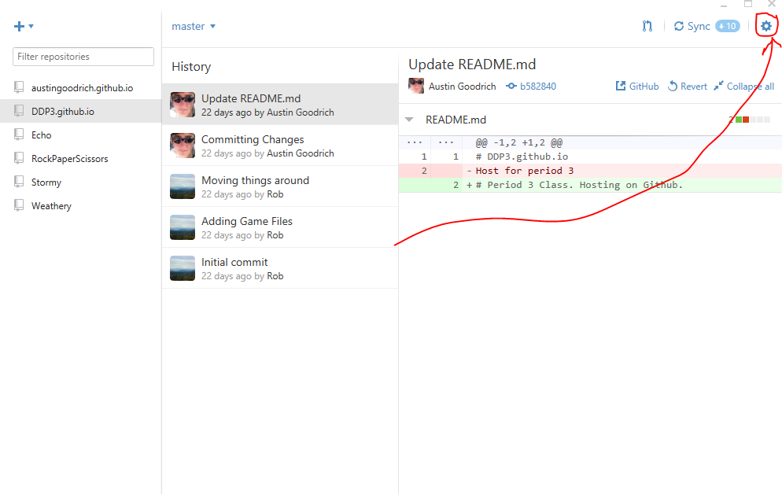
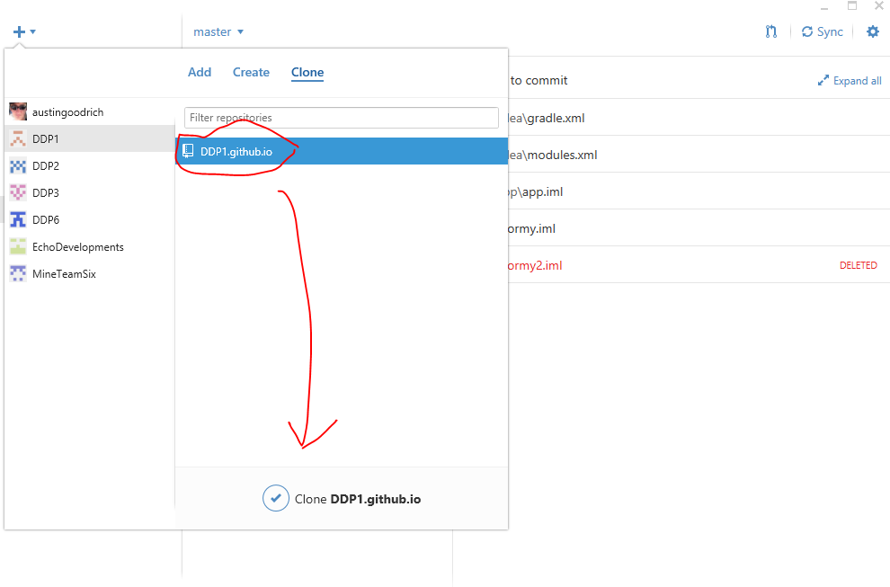
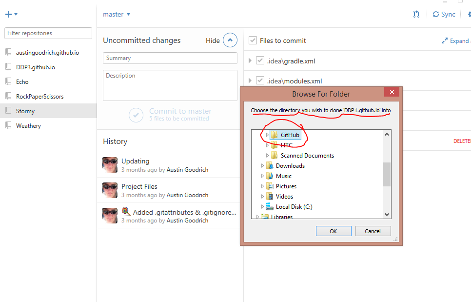
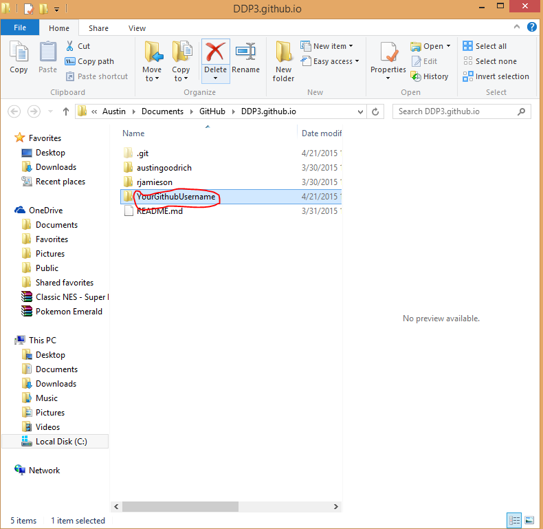
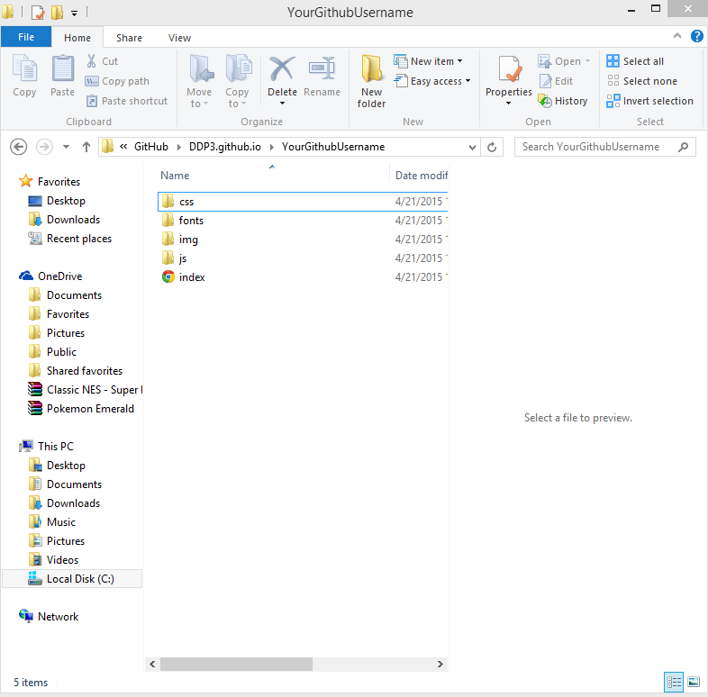
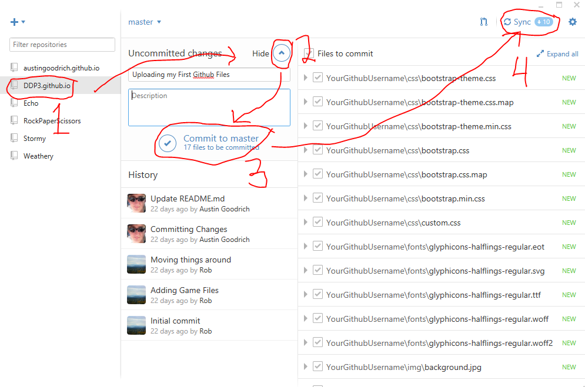
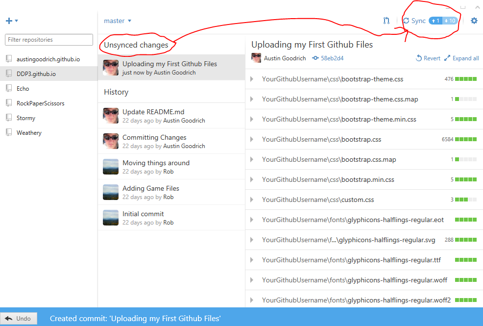

Welcome to Digital Design Computer Coding Github Hosting
On this website, you can learn how to use Github. You will need to use Github to make your website accessible between other computers over the internet. Read the following steps below to create your account. If you already have an account, you may use that.
- Sign-up for Github
You will need to register an account, click here, to sign up for Github. If you already have an account, you may use that.
After you Register your account you will need to fill out a Google Form. Answer it correctly, your grade depends on it.
- Setting up Your Github on PC/Mac
After you finish the following steps above, you will need to wait until a Teacher/Teacher Assistant registers your account on your periods Github Repository
Once you are registerd in your period, open Github on your computer. All Github Programs are the same on Mac & PC.
Lets Begin our setup.
First Step: Open Github and Get Signed in

Second Step: Clone Class Repository & Upload your website







